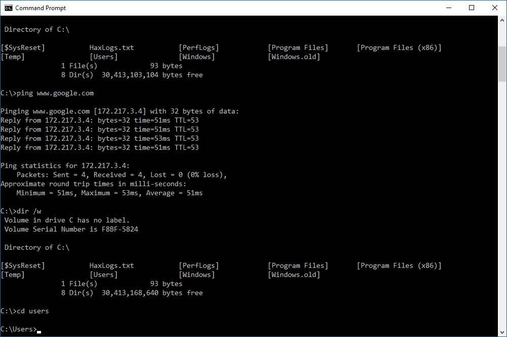

Command Line Tips
- Console: One of these Matrix-esque black boxes like in the picture. Allows you, the user, to
control your computer by typing out commands. Bear in mind: it’s really not so different from
navigating around your filesystem using the Windows File Explorer and right-clicking on things
to do stuff to them, like creating new folders or running programs. But there are some things
which it’s a lot easier to do with a command line than with a GUI.
-
Command line: The line at the bottom of the console where you type the command you’re
about to execute.
-
Prompt: The thing before where you type. In this image, the prompt is “C:\Users\SRB>”. This
means I’m currently in the folder C:\Users\SRB and anything I type comes out on the right of
the >.
-
Command: The first thing you type; think of it like a verb: “do”, “go”, “find”, “execute”.
-
Argument: Usually the second thing you type after the command; think of it like the subject
of the command. “This folder”, “this file”, “this program”.
-
Options: Anything that has one or two hyphens – or – in front of it. You pass this to your
command to make it do something in particular, like converting all the files rather than just
one, or printing the results in Spanish (to pick a slightly stupid example).

Useful Commands and Tips
-
To cancel a command that’s executing, or quit a program on the command line, type CTRL+C
or CTRL+X. This might halt the program in the middle of something and leave it half complete,
so watch out.
-
cd folder: Change directory to folder.
-
cd ..: changes directory to the parent of the current folder.
-
cd .: changes directory to the current folder… so, in other words, does nothing.
-
dir: Lists all the files and folders (“directories”) in this folder, along with some information
like how big they are and the last time they were modified.
-
mkdir folder: Make a new folder called folder.
-
move file new_file: Rename file to new_file.
-
move file folder/file: Move file into folder.
-
del file: Delete file.